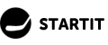
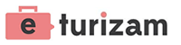

Izlaganje na konferencijama
Do sada sam imao privilegiju da govorim na osam konferencija na kojima sam upoznao puno kreativnih ljudi, stekao priličan broj ponuda za saradnju i pre svega uživao u druženju sa drugim predavačima i posetiocima.
Trudim se da predavanja budu obogaćena praktičnim primerima, savetima iz prve ruke i da drže pažnju onih koje interesuje tematika. Držao sam obuke zaposlenim u marketing agencijama kao i na događajima od više stotina posetilaca. Nadam se da je ova stranica "work in progress" i da ću imati prilike da je redovno ažuriram.
Ako mislite da mogu biti od pomoći na vašoj konfereciji slobodno mi pišite.
Slede detalji sa nekoliko pretodnih konferencija.
Ćirbasters 3.0
Jednodnevna konferencija, obeležavanje godišnjice .СРБ domena i diskusija o upotrebi ćirilice na Internetu. Iskreno cenim trud i posvećenost cele ekipe ispred RNIDS-a i bilo mi je zadovoljstvo da gostujem na panelu.
Sajt: RNIDS
Tema: Vodič za podešavanje hreflang taga za sadržaje na ćirilici i latinici
Istraživanje i rezultati koje sam dobio na ovu temu su mi bili pozivnica da gostujem na trećem Ćirbastersu. Cilj je bio da razbijem mitove o ćirilici, makar kada je Gugl u pitanju (indeksiranje, rangiranje, saopštavanje rezultata...).
Konverzija 2017
OK, ovo je već ozbiljno! Posle dužeg vremena sam bio na konferenciji gde mi je prioritet bio da prisustvujem predavanjima drugih izlagača. Ozbiljna ekipa, ozbiljno znanje, ozbiljni saveti iz PPC-a, SEO-a, društvenih mreža, analitike. Hoćeš da zaradiš (ozbiljnu) lovu? Idi na Konverziju.
Sajt: Konverzija
Tema: Long tail SEO
Nekada nije rešenje da se borite protiv jake konkurencije u nadi da ćete dobiti saobraćaj na jake ključne reči. Predavanjem "Long tail SEO" sam pokazao da postoji ceo jedan neistražen svet u kojem vam ne treba budžet, u kojem vam ne trebaju linkovi, u kojem ne morate da se bavite optimizacijom, a da na kraju u tom svetu budete ekstremno uspešni.
SEO radionica "Marketing zajednice"
Fejsbuk zajednica koju je pokrenula grupa entuzijasta danas okuplja preko 7000 članova. Naravno da sam pristao da održim jednu SEO radionicu.
Sajt: Marketing zajednica
Tema: SEO crash course
I kao što to obično biva, umesto 45 minuta, ja sam duboko preterao i ušao u termine narednog predavača. Nemoguće je odraditi SEO vodič za tako kratak rok, ali sam pokušao da posetiocima približim određene zakonitosti rada guglovog algoritma.
SEOIT 2017
Catena Media veruje u SEO. Catena Media ulaže u SEO. Catena Media želi da popularizuje SEO. SEOIT je bio vrhunski organizovan događaj na kojem su pričali domaćini iz Catene, kao i domaće SEO kolege. Treba nam više ovakvih okupljanja.
Sajt: SEOIT conference
Tema: Technical SEO (is not dead)
SEO se konstantno menja i ono što vidimo poslednjih par godina je udaljavanje od tehničkog aspekta optimizacije i usmerenje ka stvaranju sadržaja. Međutim, da li je zaista vreme da zanemarimo matematičke modele, verovatnoću i moderne sisteme parsiranja sadržaja. Nadam se da sam pokazao da smo daleko od tog vremena!
IT Open 2014
Do te 2014. godine jedina prava internet marketing, SEO i affiliate konferencija u Srbiji. Zaista sam uživao. Kragujevac odličan domaćin, publika aktivna, apsolutni win.
Sajt konferencije: IT Open
Tema: Link building - IT Open 2014
Pričao sam o važnosti linkova u Guglovom univerzumu, o tome kako dobiti i graditi linkove. Predstavio sam preko deset link building tehnika, ali i obratio pažnju na Pingvin algoritam koji ima cilj da identifikuje veštačke link profile sajtova. Puno pitanja i odličan feedback publike.
E-trgovina 2014
Ovo je bila druga godina za redom da sam pozvan da nastupim na Paliću. Priliku sam iskoristio da pričam o tehničkim postavkama SEO i PPC kampanja u onlajn trgovini.
Sajt konferencije: E-trgovina
Tema: PPC za e-commerce sajtove | E-trgovina 2014
PPC je super alat da brzo dođete do saobraćaja, ostvarite konkurentsku prednost, sakupite vredne podatke i lako se prilagodite tržištu. Ali, šta je potrebno da zaista ostvarite žestok profit?
Tema: SEO za e-commerce sajtove - E-trgovina 2014
Online prodavnice su uglavnom imaju jako glomazan CMS softver, dosadan, dupliran sadržaj koji ne daje nikakvu vrednost korisniku. Dodatni problem su Panda i Pingvin ažuriranja Google algoritma. Na predavanju sam pričao kako napraviti "SEO-friendly" onlajn prodavnicu.
WebDan 2014
Borska blogerska scena je jedna od jačih u zemlji i nije čudo da mogu da dovedu dosta jak line-up na WebDan. Bila mi je čast da sam uopšte i pozvan. Dva dana odlične zabave.
Sajt konferencije: WebDan
Tema: Šta sve Internet marketing stručnjaci ne žele da znate?
Moje predavanje je imalo za cilj da razbije mitove koje kruže oko SEO optimizacije i konvertovanju posetioca u kupce i klijente. Takođe, pričao sam o tome kako naći vredne podatke u web analitici i zašto je blog jedno od jačih oružja za ubijanje konkurencije.
E-turizam 2014
Jednodnevna konferencija o praktičnoj upotrebi interneta u turizmu. Akcenat je bio na popularizaciji online u odnosu na klasične načine promocije.
Sajt konferencije: E-turizam
Tema: Kako uz pomoć interneta jeftino doći do domaćih turista?
Do te 2014. godine sam već imao petogodišnje iskustvo u digitalnom marketingu u turizmu tako da sam sa lakoćom izneo dosta saveta na temu ponašanja naših potrošača, vrste ključnih reči koje kucaju kada se odlučuju na rezervacije, remarketingu, vrsti sadržaja koje interesuje. Nakon predavanja sam učestvovao u panelu gde sam odgovarao na pitanja posetilaca.
Nastaviće se...